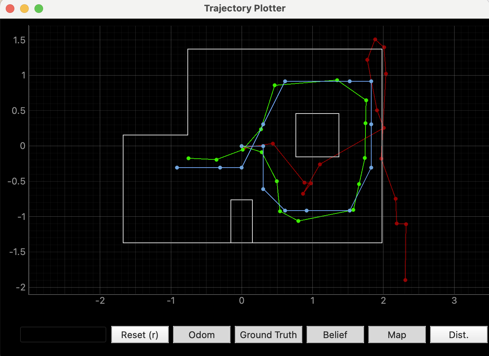

To start the lab, our first task was to run the Bayes Filter simulation provided in the lab11_sim.ipynb file. After running the simulation and moving the virtual robot around the given space, I obtained the plot shown below. In the plot: red represents odometry, green represents ground truth, and blue represents belief.
In order to continue with the rest of the tasks for Lab 11, I needed my Lab 9 code. Since I had not completed Lab 9, I started by working on that. I wrote code that would make the robot perform a 360-degree turn in place, recording distance sensor measurements every 20 degrees.
Here is my Lab 9 code. First is the ORIENTATION_CONTROL command and then there is the BLE connected while loop:
...
...
For this lab I referenced, Stephan Wagner's and Mikayla Lahr's labs from previous years. I also used ChatGPT to help with the grammar.